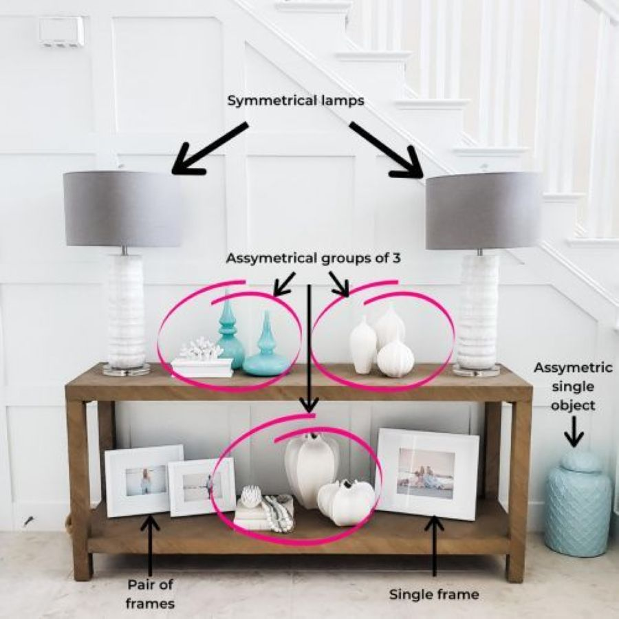
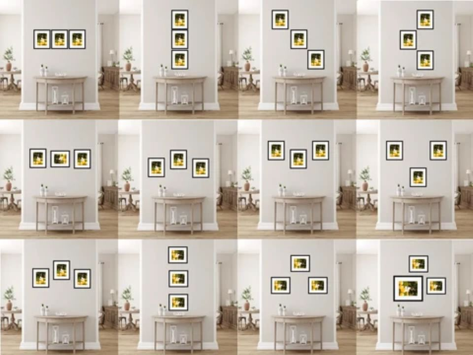

When you step into a room that feels instantly settled and harmonious, you rarely find yourself counting the objects on a shelf or analyzing the placement of furniture. Yet, beneath that sense of ease usually lies a quiet, intentional geometry. If you look closely at how a mantel is styled, how a cluster of art is hung, or how three distinct objects anchor a coffee table, you will often spot the same foundational pattern at work: the triad.
In spatial design, pairing things in even numbers often creates a sense of static symmetry. Two identical items mirror each other, halting the eye and locking the composition in place. But introduce a third element, and something shifts. The arrangement breathes.

The Mechanics of Sight: The Visual Triangle
Why do odd numbers feel so inherently right to the human eye? It comes down to movement and focus. Two items form a wall; three items form a closed yet dynamic circuit.
When you group three objects of varying heights, the eye naturally traces an invisible triangle connecting them. Instead of bouncing back and forth between a pair, your gaze travels up, down, and across the vignette. This gentle movement mimics the natural rhythms we encounter outdoors—cluster growth in the garden, branching patterns in trees, or rolling horizons. It avoids perfection, favoring instead an organic, lived-in balance.

Putting the Rule to Work
Mastering this principle doesn't require rigid mathematical formulas. On your digital drafting board or out in the room, it simply means working with three variables: height, scale, and texture.
1. The Surface Vignette
On a sideboard or entryway table, combine three elements with contrasting profiles—say, a tall ceramic vessel, a mid-height stack of linen-bound books, and a low, heavy bowl. By varying the silhouette and keeping the total count to three, you achieve depth without clutter.
2. Wall Art and Framing
The rule isn't limited to tabletop objects. Grouping three coordinated frames in a vertical stack or a staggered horizontal triad creates an immediate architectural focal point on an otherwise bare wall, drawing the eye upward and expanding the perceived volume of the room.

Finding the Balance
Like any good tool in the workshop, the rule of three is a guide, not a cage. You don't need to count every item in your home. But when a shelf feels heavy, a corner feels awkward, or a room lacks a certain rhythm, look to the triad. Often, adding one element—or taking one away—is all it takes to bring the entire space back into focus.